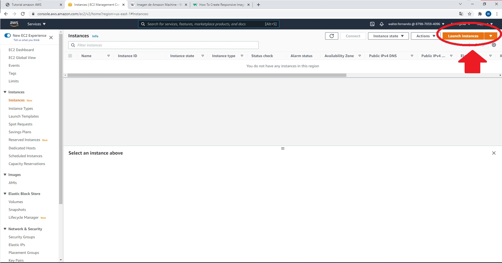
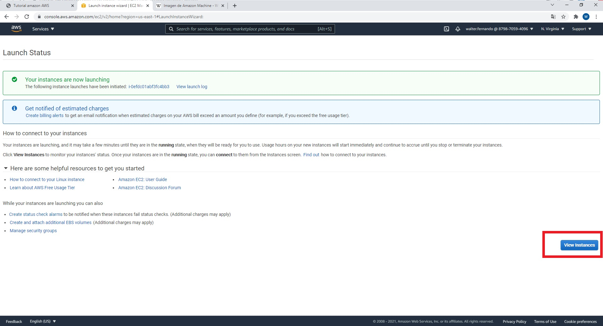

Creacion y configuración de la instancia en Amazon
Es necesario contar con una suscripcion a AWS previamente para poder crear una instancia o servidor virtual en Amazon. Lo primero que debemos saber es que Una imagen de máquina de Amazon ( AMI ) es un tipo especial de dispositivo virtual que se utiliza para crear una máquina virtual dentro de Amazon Elastic Compute Cloud ("EC2"), la cual sirve como la unidad básica de implementación para los servicios prestados mediante EC2.
Para poder comenzar a crear nuestra propia instancia, primero debemos iniciar sesion previamente en la pagina de AWS (el link se encuentra en la pagina de inicio de esta Web).
Luego nos colocamos en la barra de busqueda de la pagina web y digitamos la palabra "EC2"
Al hacer clic sobre esa popción, nos llevará a una nueva pantalla, donde haremos clic en la opcion "Instances":
Hacemos clic en el boton "Launch Instances":

Hacemos clic en el boton "select" en la opcion llamada "Amazon Linux AMI (HVM),SSD Volume Type", en una version 64-bit(x86):
Hacemos clic en el boton "Next: Configure instance Details":
Nos aseguraremos de que la region seleccionada en el paso 1 de la imagen sea "N. Virginia" y que la opcion "Subnet" sea siempre: "subnet-2578b643 | Default in us-east-1a" como en el paso 2 y hacemos clic en el boton "Next: Add Storge":
Hacemos clic en el boton "Next: Add Tags":
Hacemos clic en el boton "Next: Add Tags" del paso 1 y luego Escribimos en el campo key la palabra "Name" y en el campo value el nombre del alumno que está creando la instancia, luego hacemos clic en el boton "Next: Configure Security Group", como se vé en el paso 3:
Si previamente ya habiamos creado una instancia con nuestro nombre como en la imagen anterior, solamente damos clic en "Select an existing segurity group" y elegimos la instancia que contenga nuestro nombre, de lo contrario, hacemos clic en "Create a new seguruty group" y luego hacemos clic en el boton "Review and Launch":
En la siguiente pantalla hacemos clic en el boton " Launch":
Hacemos clic en el checkbox como se ve en el paso 1 y ñuego presionamos el boton "Launch Instances":
Hacemos clic en el boton "View Instances":

Hacemos clic en el checkbox que se encuentra a la par del nombre de la instancia como se vé en el paso 1, luego hacemos clic en "Actions" y seleccionamos la opcion boton "View Instances":
Hacemos clic en el boton "Connect"
Se mostrará una pantalla como la siguiente, donde retornaremos a la pestaña que se encuentra al lado izquiedo:
Haremos clic en la opcion "Instances":
Y retornaremos al menu de selección de la instancia, donde haremos clic en la pestaña "Security":
Seleccionaremos la opcion sg-0a79be1382afb17e1 (launch-wizard-2-NombreAlumno):
Haremos clic en el boton "Edit inbound rules":
Seleccionamos la opcion My Ip en la regla Custom TCP (paso 1), luego agregamos una nueva regla (Boton "Add rule"), por ultimo en la nueva regla colocamos 5000 en el campo "Port Range" luego seleccionamos "Anywhere-Ipv4" en el campo de selección y final mente hacemos clic en el boton "Save rules", ahora ya tendremos totalmente configurada nuestro servidor virtual, podemos pasar a instalar node.js: